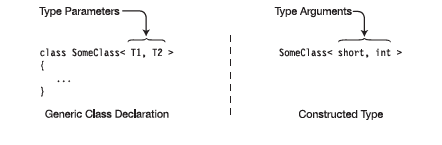
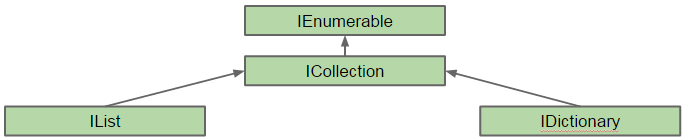
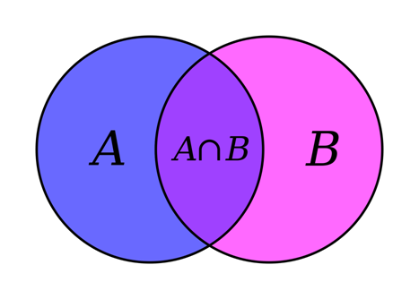

C# course
Lecture 8
Collections and generics
What are generics?
Generics brings to C# concept of type parameters. Once designed, class (or method) can be reused with other data type substituted during instatiation
- brings better quality of code and force developers write reusable and easy maintainable code
- bring significant performance boost
- in C# are similar to C++ concept of templates
Why generics are required?
- generics are type-safe
- increase performance (no boxing-unboxing when work with value-types)
- reduce code duplicates
- allow to create single piece of code and reuse it for multiple different types
Generic overview
- default value - allow to initialize generic variable regardless of its real type
- constraints - constraints are used to allow pass as a parameter only specific types
- inheritance - generic types can be inherited and extended with generic parameters
- generics might be applied for static members as well
- generic are applied to classes and methods
Generic classes
Generic types encapsulate operations that are not specific to a particular data type
Stages of creation of instance of generic type
- declare generic type and all its members using type-template
- provide actual data type to substitute placeholder (creating constructed type)
- create instance of filled-in class definition

Generic class declaration
- place a matching set of angle brackets after the class name.
- between angle brackets place a comma-separated list of type parameters
- use the type parameters throughout the body of the declaration to represent the types that should be substituted in.
class MyGenericCass <T1, T2>
{
public T1 someVar;
public T ReturnDefaultGenericValue1(){
return default(T1);
}
public T ReturnDefaultGenericValue2(){
return default(T2);
}
}
|
Creating Constructed type
You cannot create instance from a generic type. First you need to create constructed type:

class SomeClass<T1, T2> {
T1 var1;
T2 var2;
}
|
class SomeClass<int, double> {
int var1;
double var2;
}
|
Creating variables and instances
Constructed type is used as a regular type to construct instances and references:
Non-generic type
var someVar = new SomeClass();
|
Generic type
var someVar = new SomeClass<int, double>();
|
Generic vs Non-generic

Constraints on type parameter
- restrictions to the kind of types that client code can use for type arguments
- constraints can be applied for all type parameters in a list
Types of constraints

Constraints syntax
Constraints are listed as where clauses:
- each type parameter that has constraints has its own where clause.
- if a parameter has multiple constraints, they are listed in the where clause, separated by commas
- the where clauses can be listed in any order
class SomeClass <T1, T2> where T1 : class, new()
where T2 : IEnumerable
{
…
}
|
Constrainots - additional rules
- there can be at most one primary constraint (ClassName, class, struct), and if there is one, it must be listed first
- there can be any number of InterfaceName constraints.
- if the constructor constraint is present, it must be listed last
Generic methods
Generic methods might be declared in both generic and nongeneric classes, and in structs and interfaces.
Generic method has 2 sets of parameters:
- method formal parameters (in parentheses)
- method type parameters (in angle brackets)
Generic methods
Generic methods have constraints section as well as class:
public T1 SomeMethod<T1, T2>(T2 input) where T1 : class T2 : new()
{
/* … */
}
|
Generic methods could be invoked with actual type parameters:
var val = SomeMethod<MyClass, MyClassWithCtor>;(new MyClassWithCtor());
|
Important note: if type can be determined by a compiler from passed parameter, declaration of type can be omitted
public void SomeMethod<T>(T someVal) {/* … */}
...
var val = SomeMethod<int>(myIntVal);
//the same as
var val = SomeMethod(myIntVal);
|
Generic extension methods
DemoOther generic types
Generic structure:
public struct MyStruct<T> where T : class
{ /* … */ }
|
Generic interfaces:
public interface MyInterface<T> where T : class
{ /* … */ }
|
public class MyClass : MyInterface<MyClass1>, MyInterface<MyClass2>
{/* … interface implementation … */}
|
Generic delegates:
public delegate void MyDelegate<T>(T value); // Generic delegate
//…
var myDel = new MyDelegate<string>(PrintString); // Create inst of delegate
myDel += PrintUpperString; // Add a method
|
Collections
Collections are:
- objects that allows you to group other objects
- most of collection implement the same interface - ICollection, which introduces very basic members of each collection
- always of reference types
- enumerable types, where elements might usually be accessed by index or key
Namespaces and Interfaces
Collections are usually stored in following namespaces:
System.Collections
System.Collections.Generics
|
Most of collections are derived from following interfaces:
IEnumerable // basic interface that outlines enumerable object
ICollection // the most basic collection interface
IList // interface for simple list of items
ISet // defines sets. Allows to combine sets and introduces operations to manipulate sets.
IDictionary // for hash tables and dictionaries (key-value pair collections)
IComparer // introduces comparers an usually used by collections to sort elements.
|
IEnumerable interface
- IEnumerable - exposes an enumerator, which supports a simple iteration over a collection.
Members of IEnumerable:
- GetEnumerator() - returns an enumerator that iterates through a collection
IEnumerator interfaces
- IEnumerator - supports a simple iteration over a collection.
Members of IEnumerator:
- Current - property that gets current element of a collection. Returns null if MoveNext wan not called at least once.
- MoveNext - advances the enumerator to the next element of the collection.
- Reset - sets the enumerator to its initial position, which is before the first element in the collection.
Collections - Interfaces

- IEnumeration - enables iteration with foreach operator
- ICollection - enables very basic functionality of collection types like Add, Remove, Clear, Contains, CopyTo
- IList - list-specific operations like IndexOf, Insert, Remove
- ISet - set-specific operations like UnionWith, IsSubsetOf, IsSupersetOf, IntersectWith
Simple collections

Generic Collections - Interfaces

Generic Collections

List
- List
- strong-typed storage for set of elements. - Alternative for ArrayList
var lst = new List<int>();
lst.Add(1); // { 1 }
lst.AddRange(new[] { 2, 3, 7, 6, 5, 4 }); // { 1, 2, 3, 7, 6, 5, 4 }
lst.Insert(index: 0, item: 0); // { 0, 1, 2, 3, 7, 6, 5, 4 }
lst.RemoveAt(index: 4); // { 0, 1, 2, 3, 6, 5, 4 }
lst.Remove(item: 1); // { 0, 2, 3, 6, 5, 4 }
lst.RemoveRange(index: 2, count: 3); // { 0, 2, 4 }
lst.Reverse(); // { 4, 2, 0 }
lst.Sort(); // { 0, 2, 4 }
bool hasTwo = lst.Contains(2); // true
int two = lst[1]; // 2
|
Linked list
LinkedList
var lst = new LinkedList<string>(); // create linked list
var elem1 = lst.AddFirst(“isn’t”); //add first element
var elem2 = lst.AddBefore(elem1, “This”); //add element just before the first one
var elem3 = lst.AddAfter(elem1, “a”); //add element after element1
var elem4 = lst.AddLast(“list”); //add an element into the tail
var elem5 = lst.AddBefore(elem4, “singly”); //add an element before element 4
var elem6 = lst.AddAfter(elem5, “linked”); //add an element after element 5
lst.Last.Previous.Previous.Value = “doubly”; // use nav properties to navigate through values
lst.First.Next.Value = “is”;
foreach (var word in lst) print elements
Console.Write(word + “ “);
|
Dictionary
- Dictionary
- The biggest advantage of Dictionary - fast access to required element by its key.
- Alternative for HashTable.
var dictionary = new Dictionary<int, string>(); // create dictionary
dictionary.Add(1, "one"); //add first element
dictionary[2] = "two"; // add second element
dictionary[2]= "updated_two"; // update second element
dictionary.Remove(2); // remove second element
if (!dictionary.ContainsKey(2)) // check if element with index 2 exists
dictionary.Add(2, "two"); // add second element
foreach(var a in dictionary)
Console.Write(a.Value);
|
Class Queue
Queue

var queue = new Queue<int>(); // init queue
queue.Enqueue(1); // add first element to queue
queue.Enqueue(2); // add second element to queue
var peekValue = queue.Peek(); // retrieve value from queue peek without deleting element (1)
var topItem = queue.Dequeue(); // get first element from top of the queue (1)
|
Class Stack
Stack

var stack = new Stack<int>(); // init stack
stack.Push(1); // add first element to stack
stack.Push(2); // add second element to stack
var peekValue = stack.Peek(); // get value from top of stack without deleting element (2)
var topItem = stack.Pop(); // get the most recently added element (2)
|
Sets
Set - is a collection of unique elements.

var ss1 = new SortedSet<char> {`A`,`B`,`C`,`D`}; //init first set
var ss2 = new SortedSet<char>{`E`,`D`,`F`} ; // init second set
ss1.Add(`Q`); // add new item to set 1
ss1.Remove(`A`); // remove an item from set 1
ss1.UnionWith(ss2); // union sets and store results to first set
ss1.ExceptWith(ss2); //remove set 2 from set 1
|
SortedList vs SortedDictionary
Both classes represent a collection of keys and values pair of data sorted by key.

Collection initializers
var list = new List<int> {1, 2, 3, 4};
//equals to
var __temp = new List<int>();
__temp.Add(1);
__temp.Add(2);
__temp.Add(3);
__temp.Add(4);
var list = __temp;
|
The main condition for this feature - collection should support Add method
var ages = new Dictionary { { “Bart”, 26 }, { “John”, 62 } };
//equals to
var __temp = new Dictionary();
__temp.Add(“Bart”, 26);
__temp.Add(“John”, 62);
var ages = __temp;
|
How to compare elements in collections?
- IComparable - interface that вefines a generalized comparison method that a class implements to create a type-specific comparison method for ordering instances.
int CompareTo<T>(T other)
|
- IComparer - defines a method that a type implements to compare two objects.
int Compare(T x, T y)
|
Example
3rd party collections. Power collections
Power collections - community project to build set of collection not present in .NET BCL- Deque - union of stack and queue
- Bag - set with duplicates
- MultyDictionary - associates multiple values with a key
- Pair, Triple - stores 2 or 3 objects in single object